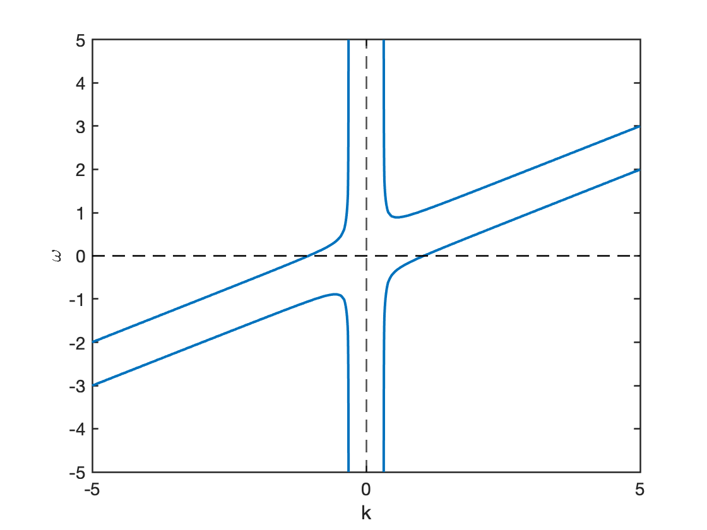
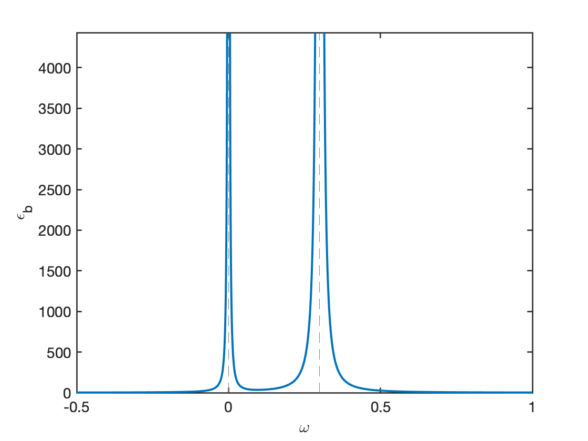
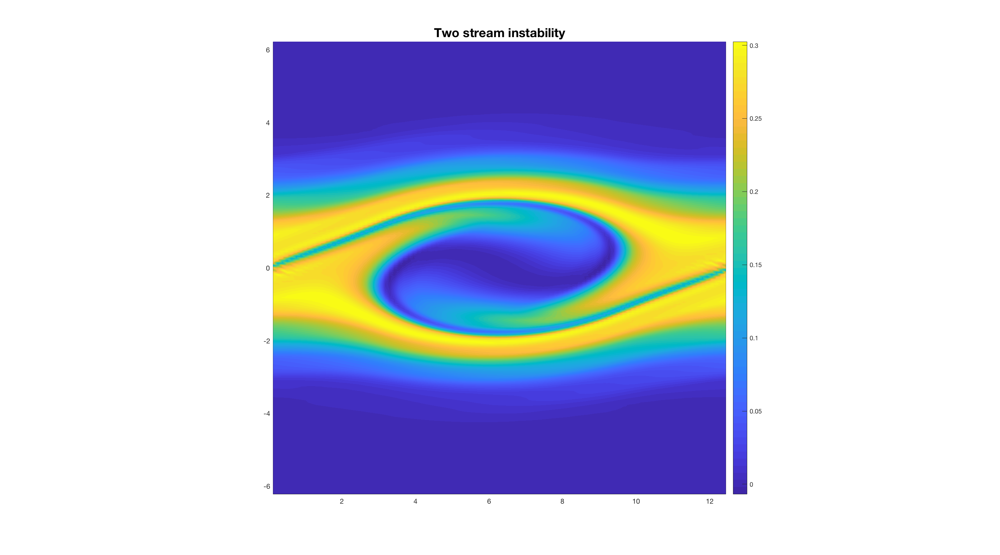

Besides the Vlasov theory, we can apply the simpler but equally powerful 2-fluid model, in which electrons and ions are treated as two different fluids. The general procedure of obtaining the dispersion relation for electrostatic wave is:
Assume the simple equilibrium state in 1D (static and “cold” ions, “cold” electrons): \(m_i=\infty,E_0=B_0=0, p_i=p_e=0, n_i = n_0, T_e=T_i=0\). Whenever we say “cold” for plasma, it does not mean that the plasma is at absolute zero degree. This only means that we are considering a situation where the kinetic pressure plays no roles in the dispersion relation. This is also a non-magnetized plasma because \(\mathbf{B_0} = 0\). The variables including perturbations are
\[ \begin{aligned} n_e &= n_0+n_1 \quad n_0\gg n_1\\ v_e &= v_0+v_1 \quad v_0\gg v_1 \\ E &= \cancel{E}_0 +E_1 \\ n_1(x,t)&=\tilde{n}_1e^{-i\omega t+ikx} \end{aligned} \]
The electron continuity and the momentum equations read
\[ \begin{aligned} &\frac{\partial}{\partial t}(n_0+n_1)+\frac{\partial}{\partial x}\big[(n_0+n_1)(v_0+v_1)\big]=0 \\ &\frac{\partial}{\partial t}(v_0+v_1)+(v_0+v_1)\frac{\partial(v_0+v_1)}{\partial x}=-\frac{e}{m_e}\big[ (E_0+E_1)+(\mathbf{v}_0+\mathbf{v}_1)\times(\mathbf{B}_0+\mathbf{B}_1)_x \big] \end{aligned} \]
Again, for electrostatic waves, \(\mathbf{B}_1=0\). Neglecting high order terms, we get the linearized equations
\[ \begin{aligned} \frac{\partial n_1}{\partial t}+\frac{\partial}{\partial x}(n_0 v_1)+\frac{\partial }{\partial x}(n_1v_0)&=0 \\ \frac{\partial v_1}{\partial t}+v_0\frac{\partial v_1}{\partial x}&=-\frac{e}{m_e}E_1 \end{aligned} \]
Assume wave-like perturbations \(e^{ikx-i\omega t}\) as in the Vlasov theory, from the linearized momentum equation we have
\[ \begin{aligned} (-i\omega+ikv_0)v_1&=-\frac{e}{m_e}E_1 \\ \Rightarrow v_1&=\frac{\frac{e}{m_e}E_1}{i(\omega-kv_0)}. \end{aligned} \]
Substituting into the linear continuity equation, we get
\[ \begin{aligned} -i\omega n_1+ikn_0v_1+ikn_1v_0=0 \\ \Rightarrow n_1=\frac{kn_0v_1}{\omega-kv_0}=\frac{kn_0}{\omega-kv_0}\frac{\frac{e}{m_e}E_1}{i(\omega-kv_0)}. \end{aligned} \]
This is the density perturbation in response to electric perturbation \(E_1\) in 2-fluid theory.
Then we can use the Poisson’s equation to generate the dielectric function
\[ \begin{aligned} \nabla\cdot(\epsilon_0\mathbf{E}_1)+en_1\equiv\nabla\cdot(\epsilon \mathbf{E}_1)=0 \\ ik\epsilon_0 \tilde{E}_1+e\tilde{n}_1=ik\epsilon \tilde{E}_1 \\ \Rightarrow \epsilon=\epsilon_0 \Big[ 1-\frac{{\omega_{pe}}^2}{(\omega-kv_0)^2} \Big] \end{aligned} \]
which is the same as the result given by Vlasov theory (Y.Y. Problem Set #6.2). The advantage of using 2-fluid method is that we do not need to consider velocity space, which simplifies the derivation.
If we have two streams of electron described by \(g(v)\) as
\[ \begin{aligned} g(v)=\frac{1}{2}\big[ \delta(v-v_1)+\delta(v-v_2) \big] \end{aligned} \]
with the oscillation frequency \(\omega_{p1},\omega_{p2}\) and number density \(n_{p1,1},n_{p2,1}\) respectively. In consideration of linear superposition property, we expect the dielectric function to be
\[ \frac{\epsilon}{\epsilon_0}=1-\frac{{\omega_{p1}}^2}{(\omega-kv_1)^2}-\frac{{\omega_{p2}}^2}{(\omega-kv_2)^2} \]
If \(g(v)\) is a continuous distribution in general, \(g(v)=\sum_j g_j(v)\), then
\[ \begin{aligned} \frac{\epsilon}{\epsilon_0}&=1-\int_{-\infty}^{\infty}\sum_j \frac{{\omega_{p,j}}^2 g_j(v)\mathrm{d}v}{(\omega-kv)^2} \\ &=1-\frac{{\omega_{pe}}^2}{k^2}\int_{-\infty}^{\infty}\frac{g(v)\mathrm{d}v}{(v-\omega/k)^2}. \end{aligned} \]
Note that \(\delta^\prime(x) = x^{-1}\delta(x)\). Here we reconstruct the result of Vlasov theory from 2-fluid theory. The equivalence of the two approaches is explored more thoroughly in later section Fluid Descriptions of Kinetic Modes (ADD LINK!).
Then what happens if ion motion is included? We still have “cold” ions at rest in equilibrium but now with ion perturbations in density. The Poisson’s equation should include ion density perturbation
\[ \begin{aligned} \nabla\cdot(\epsilon_0 \mathbf{E}_1)&=\sum_{j=i,e} q_j n_{1j} \\ \Rightarrow \frac{\epsilon}{\epsilon_0}&=1-\frac{{\omega_{pe}}^2}{k^2}\int_{-\infty}^{\infty}\mathrm{d}v \frac{\partial g_e(v)/\partial v}{v-\omega/k}-\frac{{\omega_{pi}}^2}{k^2}\int_{-\infty}^{\infty}\mathrm{d}v \frac{\partial g_i(v)/\partial v}{v-\omega/k} \end{aligned} \]
In the simplest equilibrium case, \(g_e(v)=\delta(v-v_0),\ g_i(v)=\delta(v)\)
\[ \frac{\epsilon}{\epsilon_0}=1-\frac{{\omega_{pe}}^2}{(\omega-kv_0)^2}-\frac{{\omega_{pi}}^2}{\omega^2} \]
Let \(\epsilon=0\), we get the dispersion relation \(\omega=\omega(k)\). An example dispersion relation and dielectric function property are shown in Figure 14 and Figure 15, respectively. Note that if you have a real wave number \(k\), you will get a pair of conjugate \(\omega\), one of which that lies between \(0\) and \(kv_0\) is an unstable mode. This will exhibit 2-stream instability as shown by the velocity space distribution in Figure 16.



\[ \begin{aligned} \epsilon(\omega,k)/\epsilon_0=1-\frac{{\omega_{pe}}^2}{(\omega-kv_0)^2}-\frac{{\omega_{pi}}^2}{\omega^2}=0 \notag \\ 1=\frac{{\omega_{pe}}^2}{(\omega-kv_0)^2}+\frac{{\omega_{pi}}^2}{\omega^2} \end{aligned} \]
Let \(\omega/\omega_{pe}=z,\ \frac{kv_0}{\omega_{pe}}=\lambda\), such that \(z\) and \(\lambda\) are dimensionless numbers. Let the right-hand side be \(f(z)\), then
\[ f(z)=\frac{1}{(z-\lambda)^2}+\frac{{\omega_{pi}}^2/{\omega_{pe}}^2}{z^2}=\frac{z^2+(z-\lambda)^2 \omega_{pi}^2/{\omega_{pe}}^2}{(z-\lambda)^2z^2} \]
We can plot \(f\) to find the threshold of \(k\) when the instability will happen. See Y.Y’s Problem Set 6.3 for details.